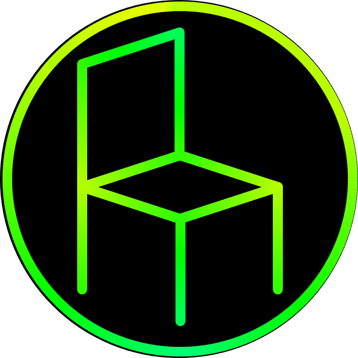

Community
NAPbypass
Discord: https://discord.gg/hcAMVb8j3v/
Website: https://thecoolcookie99.github.io/napbypass.github.io/guides/
NAPbypass is a small community of developers that attempt to bypass the Naplan Locked down browser FOR EDUCATIONAL PURPOSES ONLY. The main bypassers include: theSEAT, ShepFish and the founder JoshAtticus. We do NOT condone violating academic integrity WHATSOEVER.
Compression
Compressed Bad Apple
16KB bad apple: Watch on youtube
Bad apple on an arduino UNO R3: https://youtu.be/a8SSfBw-mNA
Github: https://github.com/Thecoolcookie99/Bad-Apple-LCD-UNO-R3
Can't be bothered explaining it, it just shows a different rectangle every frame and calculates colour based off of is the first point is greater or lesser than the first point. Stored in text so it can be stored compactly in the code
Hardware
NAPbypass
Discord: http://discord.gg/QjGpH6rSQQ
Websites:
https://community.casiocalc.org/
I assisted in the visual conversion of the Casio FX-82 AU II Plus 2nd edition's Segment 0 ROM. We are trying to jailbreak and install simple software on the calculator.
Video
YouTube Channel - My YouTube channel where I post videos about anything (no pattern really) that interests me which mainly involves memes related to trending youtube content.
https://www.youtube.com/@the_SEAT
Please make sure to subscribe and like my videos!
Game
About The Forgotten Archives - The Forgotten Archives is a fan-made Undertale-inspired game built using MakeCode Arcade. It features a unique story, pixel art, and gameplay elements inspired by Undertale, such as enemy encounters, an inventory system, captivating storyline and unique tileset.
Download link: Download the Beta Version
How to run: Download the PNG file from the link above, then open it in MakeCode Arcade using the upload button. (Note: If it doesn't work, try using the Microsoft Store version of Makecode Arcade.)
Note: This is a beta version and may have bugs or incomplete features. I do not plan to update it further.
Graphics
About The TI-Nspire CAS Graphing Calculator 3D engine - I used AI to create a polygon rendering engine for the TI-Nspire CAS calculator. It is the first (that I know of) 3D engine for the TI-Nspire. For some reason, the movement controls only work in the emulator although the actual rendering works fine on the calculator.
Download link: Download the Beta Version
How to run: Download the TNS file from the link above, then open it in TI-Nspire CAS software or upload it to the calculator using the online file transfer application (requires chrome).
Community
Discord: - My Discord account is @theseat_yt
Creative coding
Scratch: - My Scratch account is https://scratch.mit.edu/users/TheCoolGuy99official/
